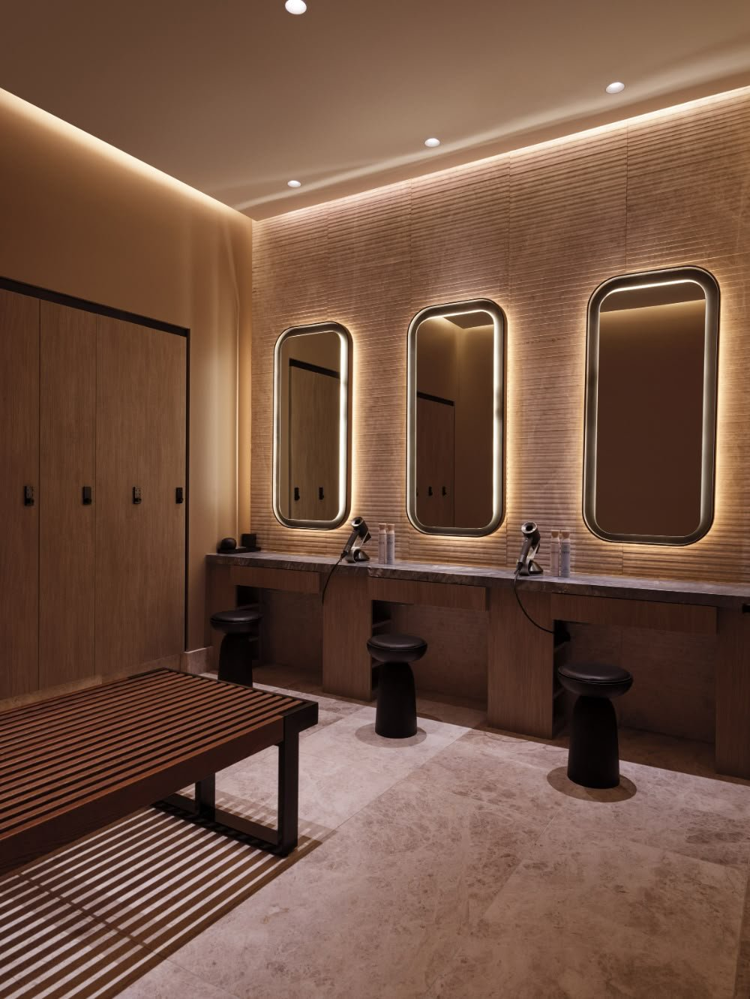

О студии
«Линия» — камерная студия пилатеса на реформерах для жителей юго-запада Петербурга.
Мы сознательно ограничили зал четырьмя реформерами: так в группе остаётся время на каждого, а тренировки проходят спокойно и сосредоточенно. Пилатес на реформере помогает укрепить мышцы кора, улучшить осанку и подвижность суставов — нагрузку легко подобрать под любой уровень.


Что внутри
Зал
Четыре профессиональных реформера, естественный свет, тихая музыка.
Раздевалка
Шкафчики, душ, фен и всё необходимое после тренировки.
Чай и вода
Можно прийти заранее и выпить чаю перед занятием.
Как добраться
Красносельский район, Санкт-Петербург. Точный адрес сообщим при записи.
Открыть карту района